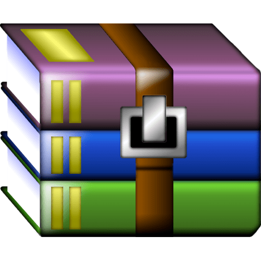

Info:
!!! Remember I don't own or edit anything on links that might be on this torrent!!!

WinRAR is a powerful archive manager for Windows. This is a powerful compression tool with many integrated additional functions to help you organize your compressed archives. It can backup your data and reduce size of email attachments, decompress RAR, ZIP and other files downloaded from Internet and create new archives in RAR and ZIP file format. The archiver puts you ahead of the crowd when it comes to compression. By consistently creating smaller archives, WinRAR is often faster than the competition. This will save you disc space, transmission costs AND valuable working time as well. WinRAR is ideal for multimedia files. It automatically recognizes and selects the best compression method.
The special compression algorithm compresses multimedia files, executables and object libraries particularly well. RAR files can usually compress content by 8 percent to 15 percent more than ZIP files can.
Features
It is a powerful compression tool with many integrated additional functions to help you organize your compressed archives.
It puts you ahead of the crowd when it comes to compression. By consistently creating smaller archives, WinRAR is often faster than the competition. This will save you disk space, transmission costs AND valuable working time as well.
Supports all popular compression formats (RAR, ZIP, CAB, ARJ, LZH, ACE, TAR, GZip, UUE, ISO, BZIP2, Z and 7-Zip).
It is ideal for multimedia files. Automatically recognizes and selects the best compression method. The special compression algorithm compresses multimedia files, executables and object libraries particularly well.
Allows you to split archives into separate volumes easily, making it possible to save them on several disks for example.
Allows you to create selfextracting and multivolume archives.
Recovery record and recovery volumes allow to reconstruct even physically damaged archives.
It is also ideal, if you are sending data through the web. Its 256 bit password encryption and its authenticated signature technology will give you the peace of mind you have been looking for.
It is easier to use than many other archivers with the inclusion of a special "Wizard" mode which allows instant access to the basic archiving functions through a simple question and answer procedure. This avoids confusion in the early stages of use.
It is a trial product, meaning you have the chance to thoroughly test it. The program can be used absolutely free of charge for 40 days!
Licenses are valid for all available language and platform versions. If you have purchased several licenses, you can even mix versions to meet your own personal needs.
https://www.virustotal.com/gui/file/287a6f3835c3aa2d2b21898716d69b4f3692e86dfbfa3108ddb9ceaf484625d1
https://www.virustotal.com/gui/file/58db4b5eb2791d50469347cafb599afcd5bb0f932d1b34cec0842a2ed4e022a1